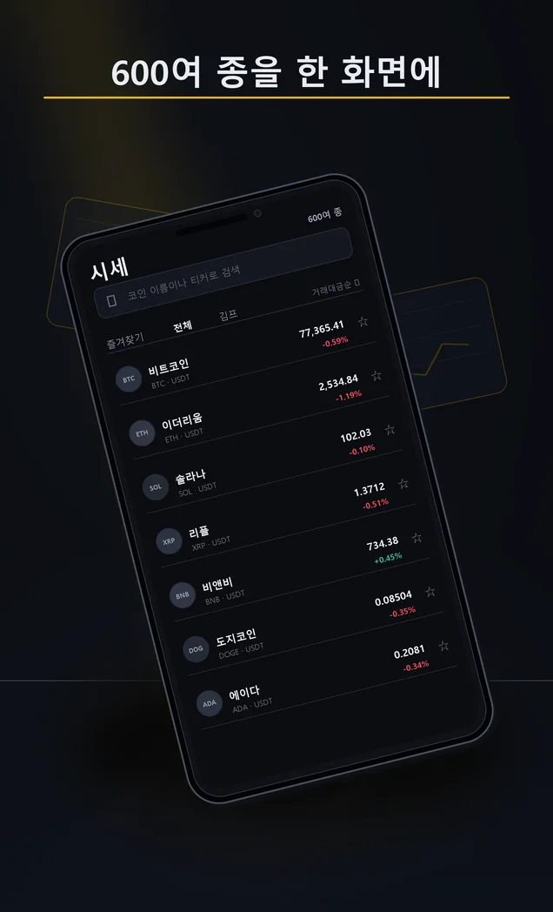
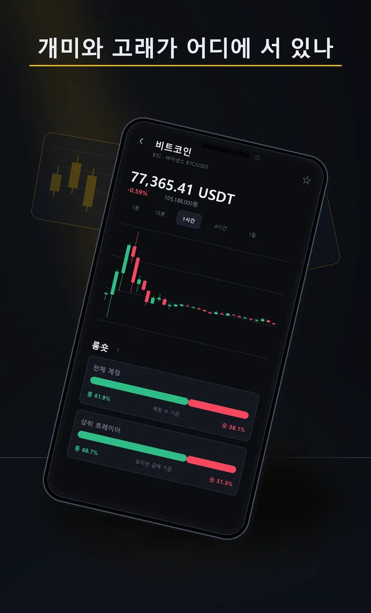

화면 둘러보기
앱 안은 이렇게 생겼습니다


옆으로 넘기세요
특징
같은 숫자도
뜻을 알고 봅니다
가격만 보지 않고 국내외 가격 차이와 선물 수급을 함께 살펴봅니다. 물음표를 누르면 각 지표가 무엇을 뜻하는지 설명합니다.
- 약 600종
시세 목록
바이낸스 상장 코인을 이름과 티커로 검색합니다. 거래대금순, 변동률순, 김프순으로 바꿔 봅니다.
- 5개
차트 구간
15분부터 주봉까지 캔들 차트를 확인합니다.
- 2줄
롱숏 비율
전체 계정과 상위 트레이더가 어느 쪽에 더 많이 서 있는지 나란히 봅니다.
- 국내 대비
김치프리미엄
업비트 원화 가격과 해외 가격의 차이, 52주 최고가와 최저가를 함께 표시합니다.
- 선물 수급
펀딩비 · 미결제약정
다음 펀딩비 정산 시각, 마크가, 미결제약정과 시장가 매수·매도 비율을 확인합니다.
- 0~100
이 코인의 심리
가격 흐름·펀딩비·롱숏 쏠림·변동성·거래량을 코인별로 따로 계산한 참고 지표입니다.
서비스 플랫폼
토스와 원스토어에서
만날 수 있습니다
- 토스
서비스 중
토스 앱에서 매수 전 코인 정보를 검색하거나 아래 버튼을 누르세요.
- 시세
공개 자료 조회
바이낸스와 업비트 공개 자료를 받아 표시합니다. 거래소 상황에 따라 갱신이 늦을 수 있습니다.
이용 방법
공식 플랫폼에서 시작하세요
- 1
토스 앱을 엽니다
따로 설치할 게 없습니다. 토스가 이미 있으면 끝입니다.
- 2
검색창에 이름을 칩니다
‘매수 전 코인 정보’ 또는 ‘코인 정보’.
- 3
관심 코인을 확인합니다
시세와 차트, 국내 대비와 선물 수급을 차례로 살펴보세요.
알아둘 것
먼저 말씀드립니다
- 투자 조언이나 매매 신호를 제공하지 않습니다. 표시된 지표는 사용자가 정보를 해석하도록 돕는 참고 자료입니다.
- 시세는 바이낸스, 원화 가격은 업비트 공개 자료를 이용합니다. 거래 전에는 이용할 거래소에서 다시 확인해 주세요.
- 즐겨찾기와 광고로 지표를 연 시각은 이용한 기기에 저장되며 회원가입이나 별도 로그인이 없습니다.
- 코인별 심리 지수는 이 앱이 정한 계산식입니다. 시장 전체를 대상으로 하는 다른 공포·탐욕 지수와 값이 다릅니다.
다른 앱